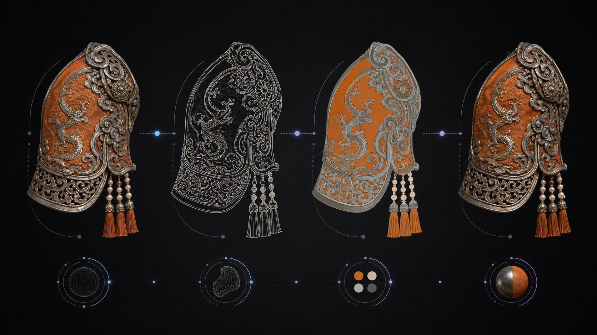

Structure before decoration
Composition, silhouette, proportion, and spatial relationships are defined before texture and visual polish.
AI Visual Reverse Engineering
A controlled method for reading an image, extracting its visual logic, simplifying structure and color, rebuilding material detail, and validating the result.
My Method & Philosophy
The method separates a complex image into visual language, structure, color, and material before recombining them. Each stage solves one problem, making the final output easier to direct and evaluate.

Composition, silhouette, proportion, and spatial relationships are defined before texture and visual polish.
Visible facts are separated from assumptions so prompts remain grounded in the source image.
Clear requirements for form, color, material, camera, and exclusions reduce random variation.
AI accelerates analysis and iteration, while final accuracy, usability, and ethics remain human decisions.
How To Use It
The stages can be used independently, but the full sequence provides stronger control when an image must be studied, simplified, and rebuilt.
Confirm the subject, intended output, image quality, important details, and elements that must remain unchanged.
Extract the core theme, composition, style, material, atmosphere, camera, and viewing angle as structured language.
Remove color and lighting distractions to study contours, internal divisions, proportion, and spatial logic.
Assign clean local colors to independent regions, strengthening hue and value separation without texture noise.
Combine the approved structure and palette with specific craft, material, lighting, lens, and quality terms.
Compare structure, color, material, edge quality, and practical usability; revise only the failed dimension.
Visual Prompt Parameters
Professional prompts work through controlled information, not decorative vocabulary. Each parameter should influence a visible part of the result.
Defines what must appear and which object carries the visual priority.
Chinese opera armor shoulderControls framing, silhouette, proportion, position, and relationships between elements.
macro close-up · centered formSets the overall medium and finish without replacing structural instructions.
museum artifact photographyUses precise material vocabulary to guide learned visual associations.
oxidized silver · silk · filigreeDetermines readability, depth, highlights, shadow softness, and emotional tone.
soft studio light · white backdropControls perspective, detail scale, depth of field, and photographic credibility.
macro lens · shallow depth of fieldStates what must remain unchanged and which common generation errors to avoid.
preserve silhouette · no extra objectsDefines the practical finish, background, clarity, and intended downstream use.
clean edges · high detail · reusablePractical Boundaries
The workflow is a direction and iteration system. It does not recover an image's original hidden prompt or guarantee a perfect result in one generation.
Vision-language analysis describes likely visual features; it cannot reveal the exact original generation process.
It may look segmented, but it is not automatically a layered Photoshop file or editable vector artwork.
Generated contours may contain gaps or distortions and require manual vector cleanup for fabrication.
Craft and material vocabulary improves direction, but results still require comparison and targeted iteration.